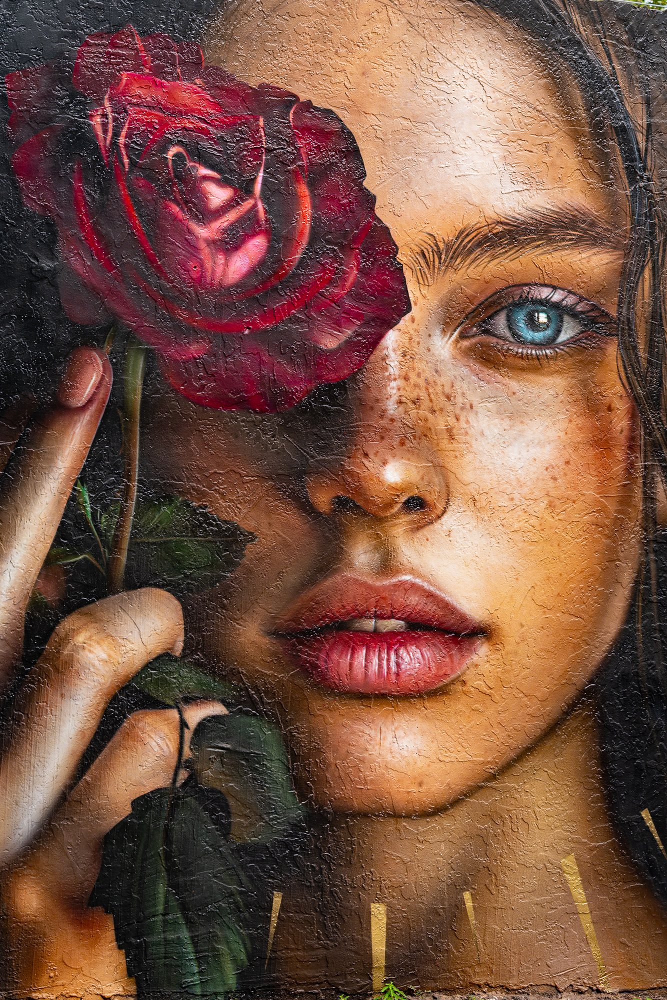

Horizons Croisés Photographie
Entre deux vols, je pose mon regard sur le monde.
Des routes, des visages, des lumières d'ailleurs…
Ici se croisent les horizons que j'ai eu la chance de traverser.

- MIA
- The Veiled Rose
- Miami
- Street Art
Séries
Tableau des escales
| Escale | Série | Statut |
|---|---|---|
| CPT | Wild Souls of Aquila | Disponible → |
| MIA | Street Art | En préparation |